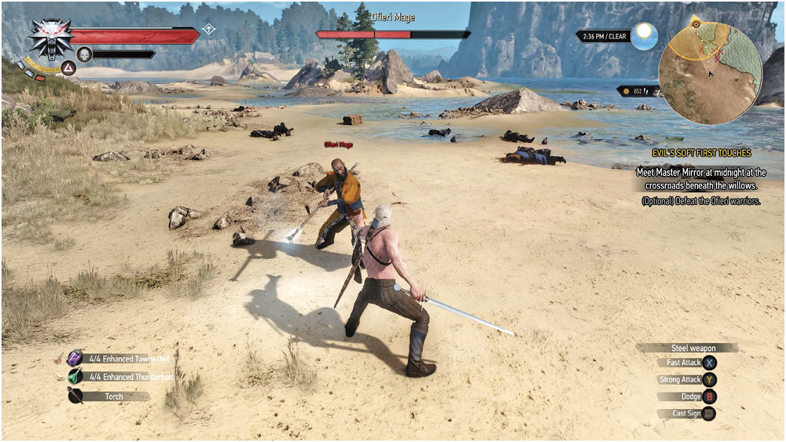
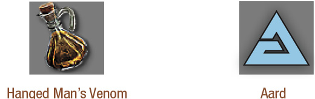

Objectives
(Optional) Defeat the Ofieri warriors.
 A mighty storm cracks open the Ofieri vessel, and it runs aground on the beaches northwest of Novigrad . After extricating yourself from a rather ignominious position, you are free to face a group of six Ofieri warriors lead by an impressively skilled Mage. You can:
Run away, ideally in a southeasterly direction. Or,
Battle them:
Defeating the Ofieri Mage: The Mage’s Attacks
Sand Cage: A number of small clouds of sand appear around you, before quickly closing in to damage and knock you down. Simply roll or dodge out of this maelstrom (the Mage’s most damaging attack), and close the distance; the Mage doesn’t tend to attempt this when he’s facing you in melee combat . If you’re fighting warriors too, back away from the Mage completely and coax the warriors into fighting first.
Sand Tornado (Long Range): A fast-moving whirl of sand whips toward you in a straight line. This gust causes damage and lifts you off the ground then throws you down just as violently. The tornado is signaled by the Mage whirling his staff around him, and he remains within (becomes part of) the tornado itself. As the tornado is relatively slow-moving, multiple dodge or rolls can quickly avoid this. It can be interrupted by casting Aard on the tornado as it comes into range.
(Close Range) Force Push: A quick wind gust attack that knocks you back, this is his way of exiting close combat after you strike him repeatedly. So don’t be greedy when tackling him; roll in with a couple of strikes and then back up so you aren’t struck by this and staggered.
Sand Coil Attack: The Mage points his staff in your direction and starts to spin it in a circle; sand shoots out of the staff (like a sideways tornado), causing damage and temporarily stunning you. Dodge to the side!
Staff Attack: At close combat range, the Mage uses his magic staff as a physical weapon (striking multiple times); simply parry and counter or dodge the attack as you would any other.
A Vanishing Act (Defensive): Expect him to disengage or avoid combat by simply vanishing, only to appear a few moments later with a whipping sand gust around him that damages those nearby. He can also dispel Yrden, reflect most bombs and bolts back at you, and tends not to burn or freeze for nearly as long as a normal human. Simply re-acquire the target once he vanishes (by locking onto the foe again) and roll out of his way until his attack concludes.
A Vanishing Act (Offensive): The Mage may teleport in close to you, while simultaneously causing a large sand blast that damages and staggers you.
Weaknesses: Sword Damage. The Mage is very susceptible to sword strikes. If you manage to get in close (after stunning the Mage), it is possible to hit him three times before he counters. This is the foundation of your attack plan.
Defeating the Ofieri Foes: The Best Battle Tactics
Begin by equipping the armor you’re carrying, as it’s not wise to fight the Ofieri bare-chested (despite what many a Skelliger might tell you).
Back up away from the Mage and save him for last. Then battle the warriors in the same way you would tackle a group of bandits or other human soldiers. All the usual tactics apply here.
Be advised that as long as more than one soldier is alive, the Mage only uses his teleports to stay away from you and any soldiers in the vicinity. When one soldier is left, the Mage begins using some ranged attacks. When only the Mage remains, expect him to utilize all his attacks. Expect him to teleport when you get too close. He also always counters if struck three times, using a force blast that knocks you down. So don’t get greedy while hitting him. Instead, try a well-timed roll to get behind the Mage without being hit by the counter.
The Ofieri Mage is extremely dangerous at long range, and attacks from this distance that you might attempt are almost always dodged or reflected back at you. So close the distance as quickly as possible, using dodging and rolls to avoid any magical attacks along the way.
Once you’re within sword-clipping distance, use Aard to stagger the Mage, and quickly follow up with two or three fast strikes. Then roll or dodge away, avoiding any sand he whips up.
Continue with this “attrition” based tactic. Stagger him with Aard (or Igni, which is another option) and roll in to inflict two or three nasty sword strikes without being too greedy, before retreating back again, until the Mage yields.
Other Advice: After re-equipping your missing armor pieces, focus on the soldiers first. Dodge any area-of-effect attacks from the Mage, and once he’s the only enemy left, quickly use Axii to stun him for long enough to reach him, and inflict sword damage. Igni and Aard can also keep the Mage occupied, allowing you to reach him.
Looting the Mage: This foe always drops a “Letter from an Ofieri Merchant” (read it at your leisure), as well as a (random) runestone, and (random) valuable trinket (such as a necklace).
Ofieri Mage Vulnerabilities

The Witcher® is a trademark of CD PROJEKT S. A. The Witcher game © CD PROJEKT S. A. All rights reserved. The Witcher game is based on a novel by Andrzej Sapkowski. All other copyrights and trademarks are the property of their respective owners. Learn more at thewitcher.com.
{kind=link}